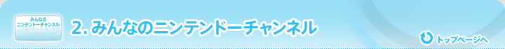
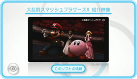
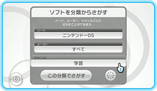
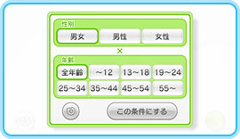
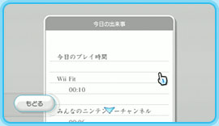
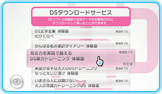

ＷｉｉおよびＤＳのこれまでに発売された色々なソフトを動画で見ることができます。デモ映像のほか、ＣＭの映像や体験プレイの様子など、盛りだくさんの内容です。また、開発スタッフのインタビュー映像も配信されていますよ。
「自分にあったソフトを探す」では、ＷｉｉやＤＳのソフトを検索できます。メーカー、ジャンル、ハード別で検索できるほか、名前だけしかわからないソフトを検索することも可能。フリーワード検索になっているので、たとえば「ゼルダ」と入力するだけで、ゼルダシリーズのソフトが一覧で表示されるんですよ。これは便利！ 好きなシリーズや好みのジャンルで検索できるので、ソフト選びに迷ったときの強力な助っ人になりそうです。
ソフト検索機能で見つけたソフトは、発売日や価格などの情報が見られるだけでなく、他のプレイヤーがそのソフトをどれだけの時間プレイしたか、またどれくらいの回数遊ばれているかを参照することができます。プレイヤーの感想は「みんなのおすすめ」という項目で確認することができます。もちろん、自分が遊んだソフトの感想を投稿することもできますよ。
ちなみに、感想を投稿する際に「おすすめのメーター」でおすすめの度合いを選択しますが、この情報は「このソフトをおすすめした人のおすすめソフト」の項目に反映されます。例えば、「WiiSports」をおすすめしたプレイヤーの多くが、「スーパーマリオギャラクシー」もおすすめしていた場合、「このソフトをおすすめした人のおすすめソフト」の項目には「スーパーマリオギャラクシー」が表示される、というわけです。
「みんなのおすすめ」の使い方
ソフトを選ぶとき、ほかのプレイヤーの感想って気になりますよね。また、自分にあったソフトを探したいときに、ほかの人の意見も聞いてみたいもの。「みんなのおすすめ」は、そんなときに参考にできるデータです。「どんな人に向いていますか？」「どんな風に遊ぶのに向いていますか？」といった質問に対する答えを集計し、％で表示しています。画面右下の「条件チェンジ」を押して設定を変えれば、男女別、年齢層別の結果も表示することができるので、例えば自分と同年代のプレイヤーの感想をチェックすることも可能。ソフト選びの参考になりそうですよね。
Ｗｉｉには、どんなソフトをどれだけの時間プレイしたのかを自動で保存する機能があります。これはＷｉｉをお持ちの方もご存じのとおり、Ｗｉｉ伝言板に「今日の出来事」として自動的に貼り付けられます。これを集計したものが、「このソフトが遊ばれた時間・回数」に反映されているんですね。
とにかく何か触わってみたい！ そんなあなたにはＤＳダウンロードサービスがおすすめ。無線通信機能を使って、ニンテンドーＤＳ用ソフトの体験版をお手元のＤＳにダウンロードすることができるんです。やりかたはとっても簡単。リストの中から遊んでみたいソフトを選ぶと、配信用の画面に切り替わります。次にお手元のＤＳを立ち上げて「ＤＳダウンロードプレイ」を選択し、あとはＤＳの画面内の指示に従ってダウンロードするだけ。ソフト選びに迷っているとき、気軽に体験版が触われるのはうれしいですね。